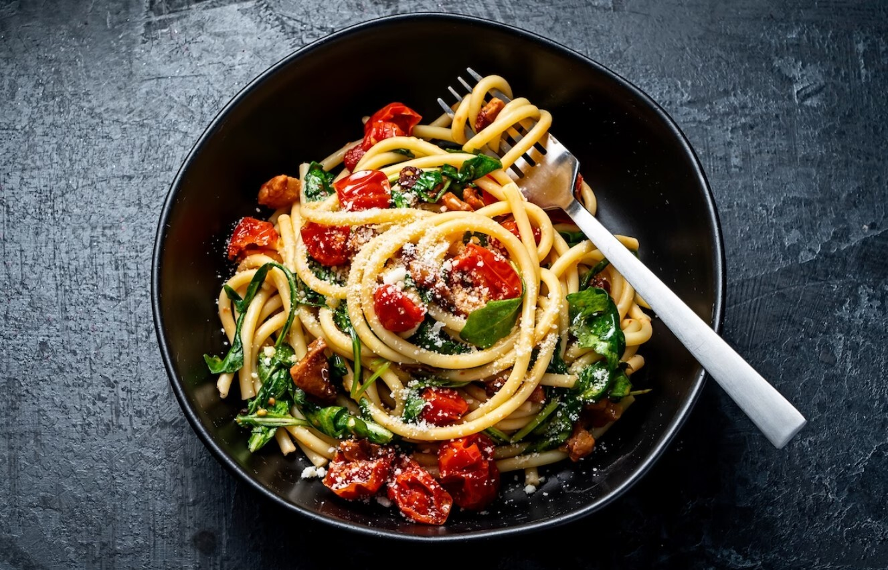

| ingredients |
|---|
| 1 pound grond beef |
| 1 onion, chopped |
| 4 cloves garlic, minced |
| 1 (28 ounce) can diced tomatoes |
| 1 (16 onince) can tomato sauce |
step 1
Directions
Combine flour and salt in a medium bowl. Make a well in the center and add beaten egg. Mix well until a stiff dough forms, adding up to 2 tablespoons water if needed.
step 2
Knead dough on a lightly floured surface until smooth, 3 to 4 minutes.
step 3
Roll dough by hand or with a pasta machine to desired thickness, then cut into strips of desired width and length.